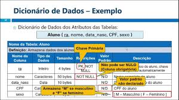

Definição
Bancos de são conjuntos de arquivos relacionados, normalmente contendo registros sobre pessoas, lugares ou informações em geral.
Esses conjuntos são coleções organizadas de dados, que podem estar inter-relacionados ou não, com o objetivo de armazenar informações essenciais para empresas.
Banco de Dados Relacional
Um banco de dados relacional é um banco de dados que modela os dados de uma forma que eles sejam percebidos pelo usuário como tabelas, ou mais formalmente relações.
O termo é aplicado aos próprios dados, quando organizados dessa forma, ou a um Sistema Gerenciador de Banco de Dados Relacional um programa de computador que implementa a abstração.
Banco de Dados Não relacional
tipo de sistema de gerenciamento de banco de dados que não utiliza a estrutura tabular tradicional dos bancos de dados relacionais.
Em vez disso, ele se baseia em diferentes formatos de armazenamento para gerenciar e organizar dados, como documentos, chave-valor, colunas ou grafos.
Dicionário de Dados
Um dicionário de dados é uma ferramenta que organiza e documenta as informações sobre os dados utilizados em um sistema de banco de dados ou em um projeto de software. Ele proporciona uma descrição clara dos dados, incluindo:
- Estruturas de Dados: Define entidades (tabelas, por exemplo), atributos (colunas) e tipos de dados (inteiro, texto, data, etc.).
- Relações: Especifica como diferentes conjuntos de dados se relacionam entre si (chaves primárias e estrangeiras).
- Regras de Negócio: Detalha as validações e restrições aplicáveis aos dados.
- Definições e Significados: Oferece descrições de cada dado, seu propósito e uso.
